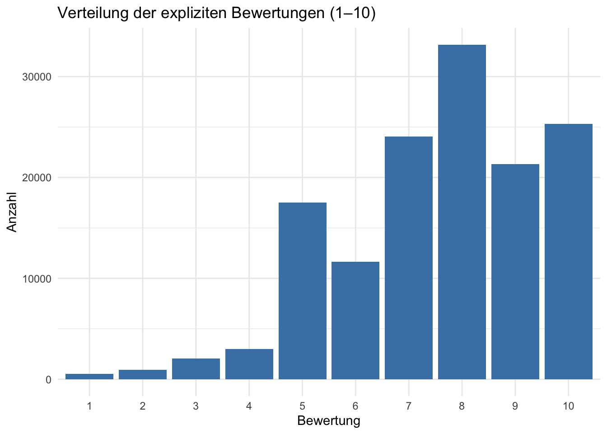
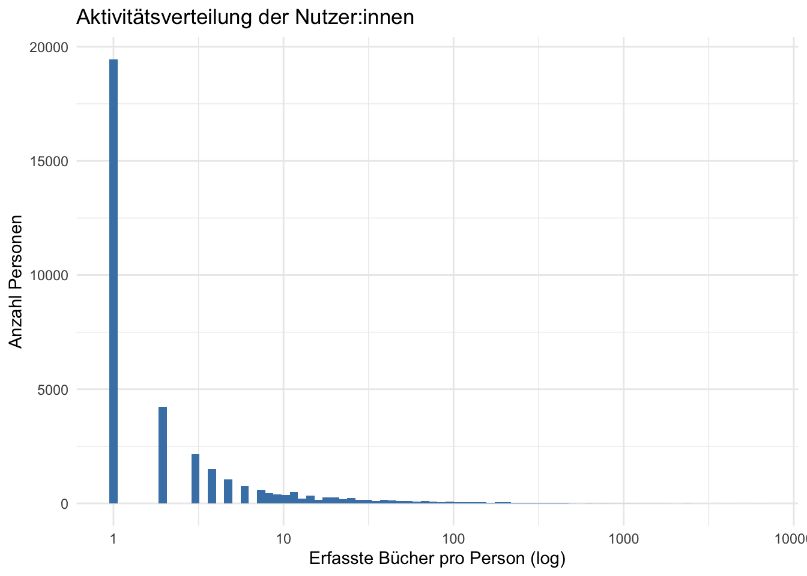
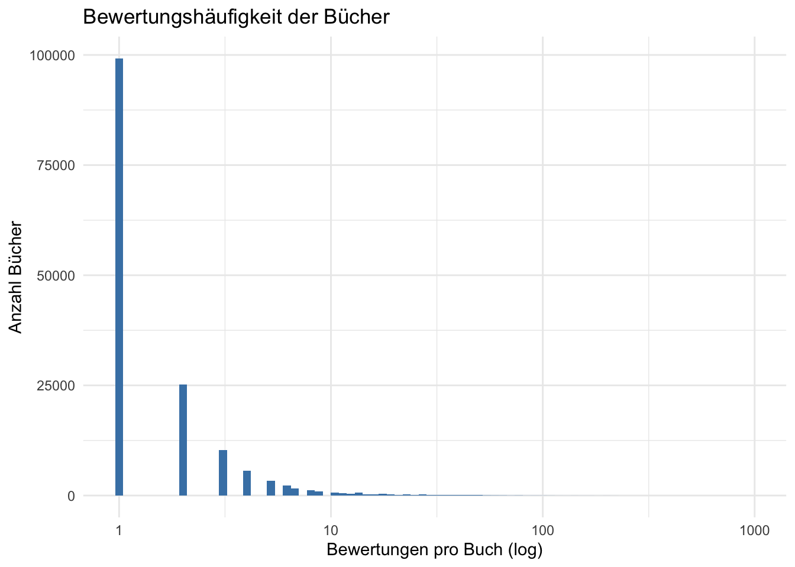
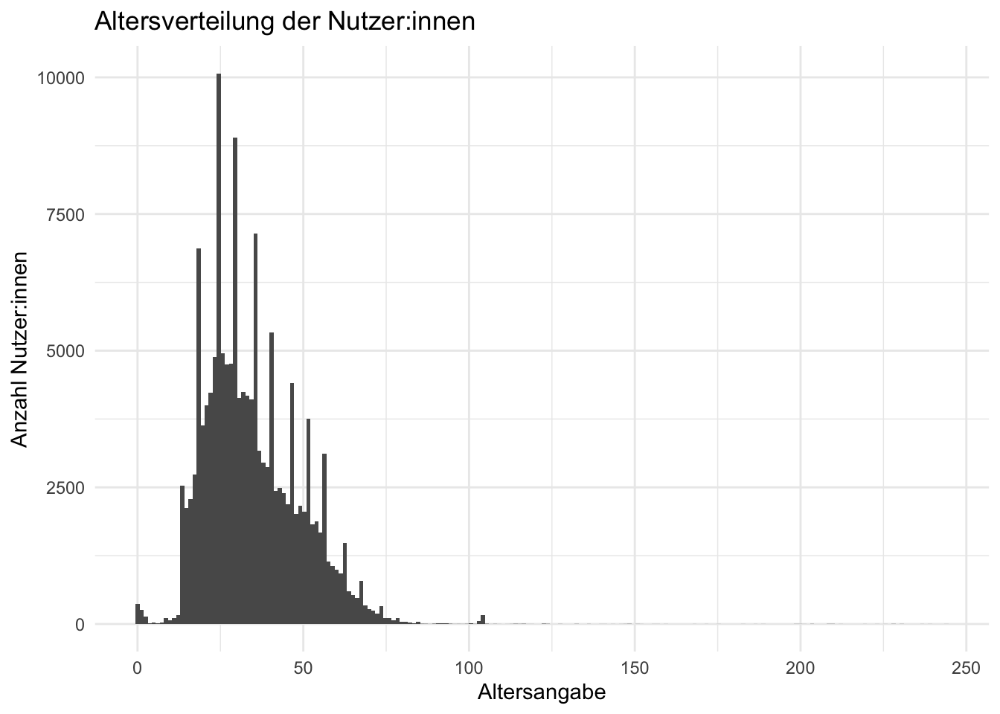
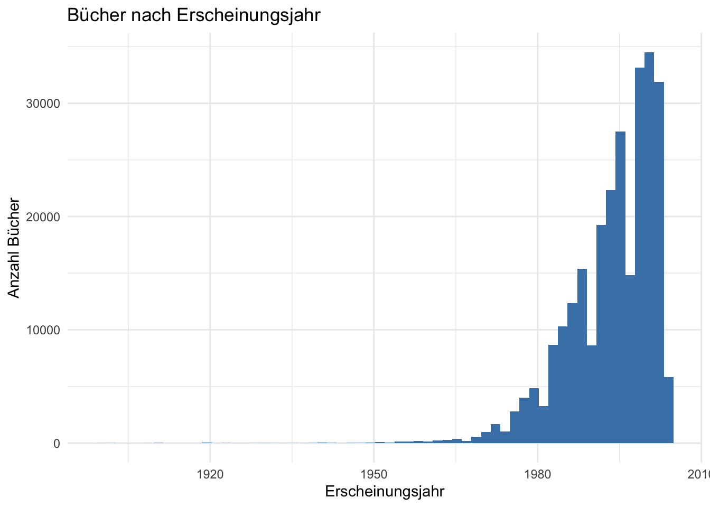
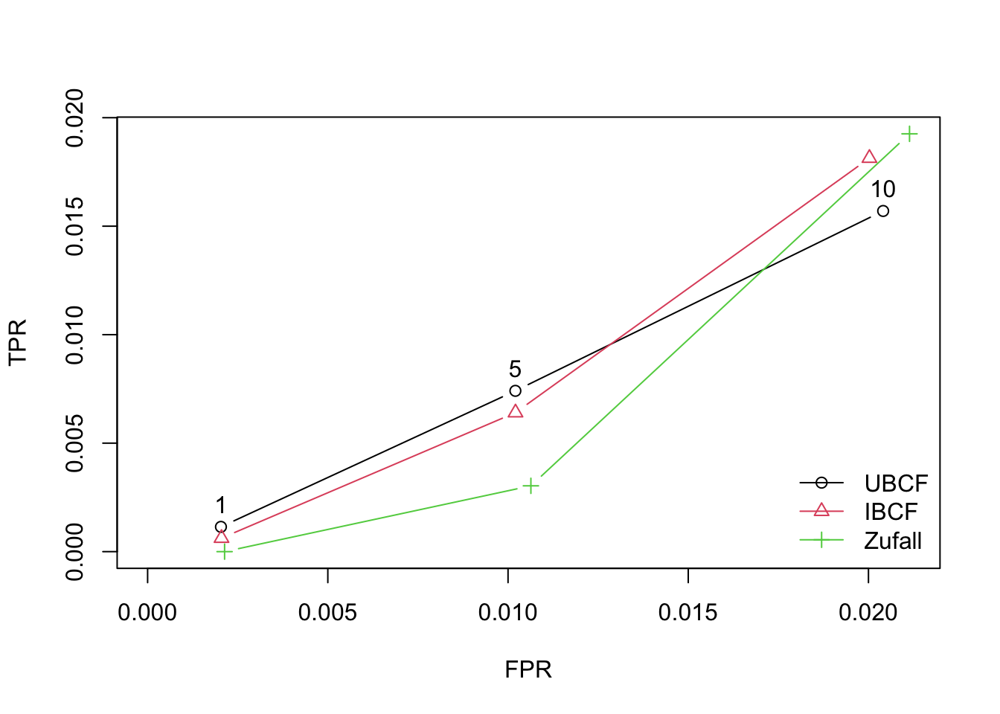
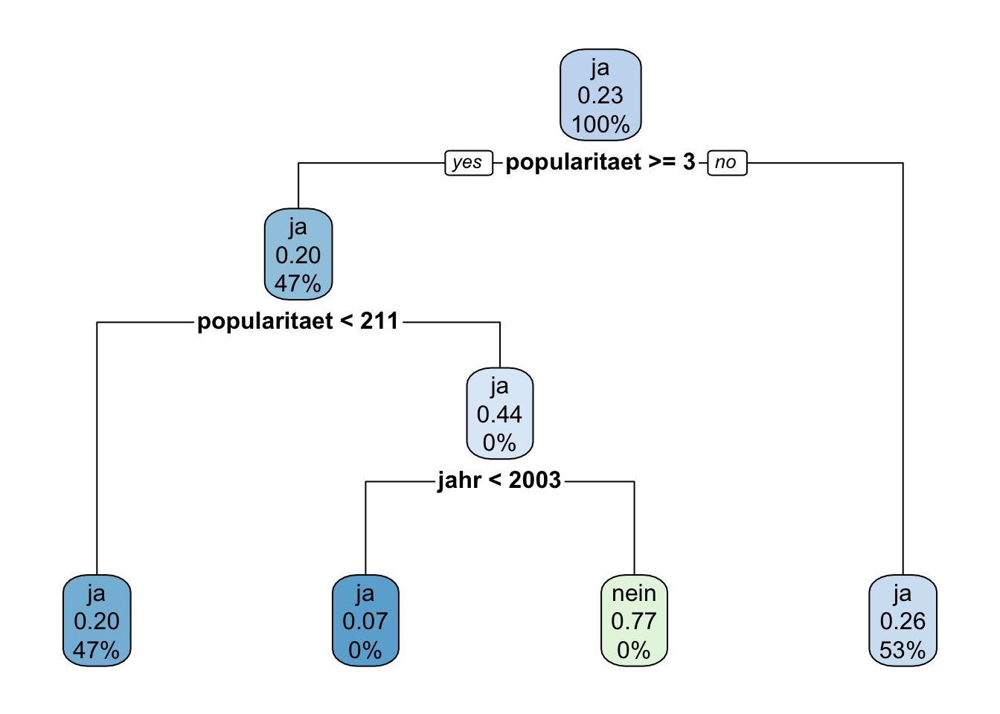
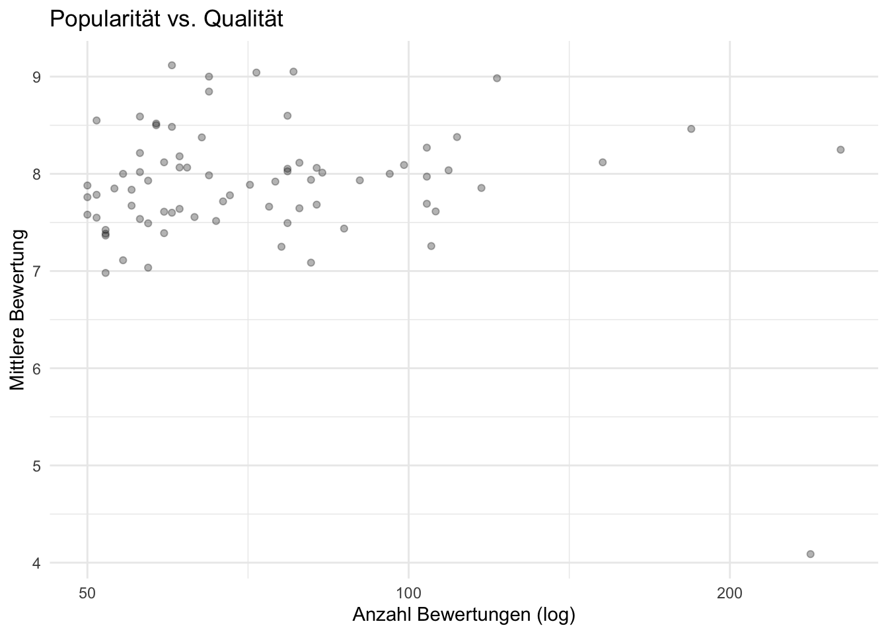

Der Book-Crossing-Datensatz (Ziegler et al. 2005) besteht aus drei Tabellen: Nutzer:innen, Bücher und Bewertungen. Sie werden über die ISBN bzw. die User-ID miteinander verbunden. Dabei treffen wir zwei Entscheidungen, die wir festhalten müssen: Erstens bedeutet eine Bewertung von 0 nicht „sehr schlecht”, sondern „erfasst, aber nicht benotet”. Für alle Analysen, die mit Noten rechnen, legen wir deshalb das Objekt explizit an, das nur die echten Noten (1–10) enthält. Zweitens fallen beim Verbinden alle Bewertungen weg, deren ISBN in der Büchertabelle fehlt — der Datensatz wird dadurch kleiner, und das sollte man beim Interpretieren im Hinterkopf behalten.
# books enthält doppelte ISBN-Zeilen (daher die many-to-many-Warnung) —# ohne distinct() würden Ratings beim Join vervielfachtbooks <- books %>%distinct(ISBN, .keep_all =TRUE)bx <- ratings %>%inner_join(books, by ="ISBN") %>%inner_join(users, by ="User-ID")explizit <- bx %>%filter(`Book-Rating`>0)nrow(ratings); nrow(bx); nrow(explizit)
[1] 493813
[1] 394109
[1] 139503
Ergebnis: Von 493.813 Bewertungen bleiben nach dem Verbinden 394.109 übrig — rund 20 % verweisen auf ISBNs, die in der Büchertabelle fehlen, und fallen weg. Nur 139.503 Bewertungen (etwa ein Drittel) sind echte Noten; der Rest ist „erfasst, aber nicht benotet”. Beide Verluste halten wir hier fest, weil alle folgenden Ergebnisse nur für die verbleibenden Daten gelten.
Deskriptiver Überblick
Bevor wir in die einzelnen Verfahren einsteigen, schauen wir uns die Verteilung der zentralen Variablen an. Das lohnt sich aus zwei Gründen: Erstens deckt es weitere Datenqualitätsprobleme auf, bevor sie uns mitten in einer Analyse überraschen. Zweitens legen einige Ergebnisse weiter unten — etwa die 77 % Trefferquote beim Entscheidungsbaum — ihren eigentlichen Grund bereits hier in der Verteilung.
Wie werden Bücher bewertet?
# Verteilung der expliziten Bewertungen (1–10)explizit %>%count(`Book-Rating`) %>%ggplot(aes(x =factor(`Book-Rating`), y = n)) +geom_col(fill ="steelblue") +labs(x ="Bewertung", y ="Anzahl",title ="Verteilung der expliziten Bewertungen (1–10)") +theme_minimal()

Ergebnis: Die Verteilung ist stark rechtslastig: Die Noten 8, 9 und 10 machen zusammen den Großteil aller Bewertungen aus, während 1 bis 5 selten vorkommt. Das ist kein Zufall — Menschen bewerten freiwillig vor allem Bücher, die sie mögen. Wer ein Buch nicht mochte, legt es beiseite und bewertet es oft gar nicht. Diese Schräglage ist die Ursache dafür, dass ein Klassifikationsmodell später hohe Trefferquoten erzielen kann, obwohl es kaum etwas gelernt hat: Wer immer „positiv” sagt, liegt einfach schon sehr oft richtig.
Wie aktiv sind die Nutzer:innen?
bx %>%count(`User-ID`) %>%ggplot(aes(x = n)) +geom_histogram(bins =80, fill ="steelblue") +scale_x_log10() +labs(x ="Erfasste Bücher pro Person (log)", y ="Anzahl Personen",title ="Aktivitätsverteilung der Nutzer:innen") +theme_minimal()

Ergebnis: Die allermeisten Personen haben nur wenige Bücher erfasst; eine kleine Gruppe hat Hunderte oder Tausende. Diese typische „Long-Tail”-Verteilung findet sich in fast allen Nutzungsdaten. Für das kollaborative Filtern ist sie das Kernproblem: Wer nur ein oder zwei Bücher bewertet hat, lässt sich kaum mit anderen vergleichen — was genau erklärt, warum wir die Bewertungsmatrix später auf aktive Nutzer:innen und viel bewertete Bücher einschränken müssen.
Wie oft werden Bücher bewertet?
bx %>%count(ISBN) %>%ggplot(aes(x = n)) +geom_histogram(bins =80, fill ="steelblue") +scale_x_log10() +labs(x ="Bewertungen pro Buch (log)", y ="Anzahl Bücher",title ="Bewertungshäufigkeit der Bücher") +theme_minimal()

Ergebnis: Auch auf der Bücher-Seite dominiert der Long Tail: Die meisten Bücher haben nur eine Handvoll Einträge, während wenige Bestseller hundertfach erfasst wurden. Neue oder wenig bekannte Bücher tauchen in so wenigen Körben auf, dass Assoziationsregeln oder Kollaboratives Filtern sie gar nicht erst berücksichtigen können — das ist das Cold-Start-Problem aus der anderen Richtung.
Altersangaben der Nutzer:innen
users %>%filter(!is.na(Age)) %>%ggplot(aes(x = Age)) +geom_histogram(bins =200) +labs(x ="Altersangabe", y ="Anzahl Nutzer:innen",title ="Altersverteilung der Nutzer:innen") +theme_minimal()

Ergebnis: Das Histogramm zeigt Altersangaben von 0 bis weit über 100 Jahre — im Datensatz finden sich Werte bis 244. Nulljährige und Hundertvierzigjährige bewerten aber keine Bücher: Diese Angaben sind schlicht falsch, sei es aus Tippfehlern, Voreinstellungen im Formular oder weil Nutzer:innen bewusst nicht die Wahrheit eintragen. Die Lehre daraus: Selbst erhobene Profilangaben sind keine Messwerte, sondern Behauptungen. Für alle Analysen, die das Alter verwenden, müssen wir vorab entscheiden, welchen Bereich wir für glaubwürdig halten (weiter unten z. B. 5 bis 100 Jahre) — und diese Entscheidung dokumentieren. Ein einziges Diagramm hat damit mehr Datenqualitätsprobleme aufgedeckt als jede Plausibilitätsprüfung am einzelnen Datensatz.
Erscheinungsjahre
books %>%filter(`Year-Of-Publication`>=1900,`Year-Of-Publication`<=2004) %>%ggplot(aes(x =`Year-Of-Publication`)) +geom_histogram(bins =60, fill ="steelblue") +labs(x ="Erscheinungsjahr", y ="Anzahl Bücher",title ="Bücher nach Erscheinungsjahr") +theme_minimal()

Ergebnis: Der Großteil der Bücher erschien in den 1990er und frühen 2000er Jahren — der Zeitraum, in dem Book Crossing aktiv war. Ältere Bücher sind deutlich seltener, teils weil sie nicht digitalisiert wurden, teils weil Nutzer:innen vor allem aktuelle Bücher erfassten. Werte außerhalb von 1900 bis 2004 (es gibt sie bis 2050) sind offensichtliche Eingabefehler und werden in der Klassifikation vorab ausgefiltert.
# Einmalig, falls noch nicht installiert:# install.packages(c("arules", "recommenderlab", "rpart", "rpart.plot",# "stringdist", "igraph", "visNetwork"))
1. Assoziationsregeln: Apriori
Die Assoziationsanalyse (Agrawal & Srikant 1994) sucht Bücher, die auffällig oft gemeinsam „im selben Korb” liegen. Ein Korb sind hier alle Bücher, die eine Person erfasst hat. Drei Kennzahlen beschreiben jede gefundene Regel: Der Support sagt, in wie vielen Körben die Kombination überhaupt vorkommt. Die Konfidenz sagt, wie verlässlich die Regel ist — wenn Buch A im Korb liegt, wie oft liegt dann auch Buch B darin? Der Lift sagt, ob das mehr ist, als man allein durch die Beliebtheit von Buch B erwarten würde; erst ein Lift deutlich über 1 zeigt einen echten Zusammenhang. Vor der Analyse entfernen wir doppelte Titel je Korb, damit nicht verschiedene Auflagen desselben Buchs als „Zusammenhang” erscheinen. Eine ausführliche Erklärung mit einem kleinen Rechenbeispiel steht in apriori_buchempfehlungen.qmd.
library(arules)
Loading required package: Matrix
Attaching package: 'Matrix'
The following objects are masked from 'package:tidyr':
expand, pack, unpack
Attaching package: 'arules'
The following object is masked from 'package:dplyr':
recode
The following objects are masked from 'package:base':
abbreviate, write
Ergebnis: Die stärksten Regeln betreffen ausnahmslos die Bände der Green-Mile-Serie: Wer zwei Bände hat, hat fast sicher auch den dritten (Konfidenz 1,0; Lift ≈ 576). Das leuchtet ein — wer eine Fortsetzungsserie liest, liest meist alle Teile. Zugleich mahnt die Spalte count zur Vorsicht: Diese Regeln stützen sich auf nur 19 bis 21 Personen. Je kleiner wir die Support-Schwelle setzen, desto eher finden wir auch Muster, die bloß Zufall sind. Bemerkenswert ist außerdem, was der Algorithmus zuerst findet: Serien, nicht Genres — die stärksten Zusammenhänge sind oft die banalsten.
2. Collaborative Filtering (recommenderlab)
Kollaboratives Filtern (Resnick et al. 1994; Sarwar et al. 2001) empfiehlt nach dem Prinzip: Finde Personen, die ähnlich bewertet haben wie du — und schau, was ihnen außerdem gefallen hat. Anders als die Assoziationsanalyse, die eine Regel für alle aufstellt, entsteht so für jede Person eine eigene Empfehlungsliste. Man kann sich die Daten als riesige Tabelle vorstellen: eine Zeile pro Person, eine Spalte pro Buch, in den Zellen die Noten. Diese Tabelle ist fast leer, denn niemand kennt mehr als einen winzigen Bruchteil aller Bücher. Fast leere Zeilen lassen sich aber nicht vergleichen — deshalb verkleinern wir die Tabelle zuerst auf aktive Nutzer:innen und häufig bewertete Bücher. Anschließend vergleichen wir zwei Varianten — Empfehlung über ähnliche Personen (UBCF) und über ähnliche Bücher (IBCF) — mit zufälligen Empfehlungen als Untergrenze.
library(recommenderlab)
Loading required package: proxy
Attaching package: 'proxy'
The following object is masked from 'package:Matrix':
as.matrix
The following objects are masked from 'package:stats':
as.dist, dist
The following object is masked from 'package:base':
as.matrix
# Schwellen sind auf das hier verwendete Subset (~140k explizite Ratings)# kalibriert — beim vollen Datensatz ruhig höher drehen.# Ziel: einige hundert User, einige hundert Bücher.aktive_user <- explizit %>%count(`User-ID`) %>%filter(n >=10)populaere_isbn <- explizit %>%count(ISBN) %>%filter(n >=20)dicht <- explizit %>%semi_join(aktive_user, by ="User-ID") %>%semi_join(populaere_isbn, by ="ISBN")# Nach dem Eindampfen erneut filtern: jeder User braucht genug Ratings# in der Matrix (sonst scheitert später evaluationScheme an given)dicht <- dicht %>%group_by(`User-ID`) %>%filter(n() >=5) %>%ungroup()rrm <- dicht %>%select(user =`User-ID`, item = ISBN, rating =`Book-Rating`) %>%as.data.frame() %>%as("realRatingMatrix")rrm
743 x 477 rating matrix of class 'realRatingMatrix' with 7605 ratings.
Ergebnis: Die verkleinerte Tabelle hat 743 Zeilen (Nutzer:innen) und 477 Spalten (Bücher) mit 7.605 Noten — damit sind immerhin rund 2 von 100 Zellen gefüllt. Vor dem Verkleinern wären es etwa 2 von 100.000 gewesen. Dieser Schritt ist also keine Kosmetik, sondern die Voraussetzung dafür, dass sich Personen überhaupt vergleichen lassen. Der Preis: Empfehlungen gibt es nur noch für aktive Nutzer:innen und bekannte Bücher.
rec <-Recommender(rrm, method ="UBCF")pred <-predict(rec, rrm[1:3], n =5)# ISBNs in Titel übersetzenempfehlungen <-as(pred, "list")lapply(empfehlungen, function(isbns) { books %>%filter(ISBN %in% isbns) %>%pull(`Book-Title`)})
$`0`
[1] "The Perfect Storm : A True Story of Men Against the Sea"
[2] "A Prayer for Owen Meany"
[3] "Big Stone Gap: A Novel (Ballantine Reader's Circle)"
[4] "STONES FROM THE RIVER"
[5] "Brave New World"
$`1`
[1] "Kiss the Girls"
[2] "East of Eden (Oprah's Book Club)"
[3] "Love in the Time of Cholera (Penguin Great Books of the 20th Century)"
[4] "Redwall (Redwall, Book 1)"
[5] "Slaughterhouse Five or the Children's Crusade: A Duty Dance With Death"
$`2`
[1] "The Bean Trees"
[2] "Lamb : The Gospel According to Biff, Christ's Childhood Pal"
[3] "Fahrenheit 451"
[4] "The Notebook"
[5] "White Oleander : A Novel (Oprah's Book Club)"
Ergebnis: Die Empfehlungslisten wirken stimmig — die eine Liste tendiert zu literarischen Romanen, die andere zu Spannung. Dabei kennt das Verfahren weder Genre noch Autor: Die Stimmigkeit entsteht allein daraus, dass Menschen mit ähnlichem Geschmack ähnliche Bücher bewertet haben. Eine Grenze sollte man kennen: Wer noch nichts bewertet hat, bekommt keine Empfehlungen, und neue Bücher ohne Bewertungen werden nie empfohlen — das sogenannte Cold-Start-Problem.
# Evaluation: UBCF vs. IBCF vs. Zufallset.seed(42)schema <-evaluationScheme(rrm, method ="split", train =0.8, given =4,goodRating =7)algos <-list(UBCF =list(name ="UBCF"),IBCF =list(name ="IBCF"),Zufall =list(name ="RANDOM"))ergebnis <-evaluate(schema, algos, type ="topNList", n =c(1, 5, 10))
UBCF run fold/sample [model time/prediction time]
1 [0sec/0.119sec]
IBCF run fold/sample [model time/prediction time]
1 [0.06sec/0.006sec]
RANDOM run fold/sample [model time/prediction time]
1 [0sec/0.006sec]
plot(ergebnis, annotate =TRUE)

Ergebnis: Der Test funktioniert so: Ein Teil der Noten wird versteckt, das Verfahren muss sie erraten. Zum Lesen des Diagramms: Die senkrechte Achse (TPR, True Positive Rate) zeigt, wie viele der versteckten Lieblingsbücher gefunden wurden; die waagerechte Achse (FPR, False Positive Rate) zeigt, wie viele Empfehlungen daneben lagen. Gut ist also eine Kurve, die steil nach oben geht, ohne weit nach rechts zu wandern. Beide Empfehlungsverfahren liegen deutlich über der Zufallslinie — sie wissen also wirklich etwas über den Geschmack der Nutzer:innen. Welches der beiden vorn liegt, ist hier zweitrangig; wichtig ist der Vergleich mit dem Zufall, denn besser als Raten sollte jedes Empfehlungssystem sein. Eine Einschränkung: Wir haben nur einmal geteilt und getestet. Für belastbare Aussagen würde man den Test mehrfach mit unterschiedlichen Aufteilungen wiederholen.
3. Clustering: Nutzersegmente
Die Clusteranalyse sucht Gruppen ähnlicher Nutzer:innen, ohne dass wir vorgeben, welche Gruppen es geben soll. Dazu beschreiben wir jede Person mit vier Zahlen: Wie viele Bücher hat sie erfasst? Welchen Anteil davon hat sie benotet? Wie streng benotet sie im Schnitt? Und wie stark schwanken ihre Noten? Der k-means-Algorithmus (MacQueen 1967) fasst dann Personen mit ähnlichen Werten zusammen. Zwei technische Schritte sind nötig, damit das fair abläuft: Alle Merkmale werden auf eine vergleichbare Skala gebracht (sonst dominiert das Merkmal mit den größten Zahlen), und die Buchanzahl wird logarithmiert, weil wenige Vielleser:innen sonst alles verzerren. Dass wir genau vier Gruppen suchen, ist hier eine Setzung für die Demonstration — in einer echten Untersuchung müsste man diese Zahl begründen.
Ergebnis: Die vier Cluster lassen sich inhaltlich interpretieren (Werte sind Mediane des vorliegenden Laufs): Ein Cluster versammelt die Vielleser:innen (≈ 83 erfasste Bücher, moderater Bewertungsanteil), ein zweiter die bewertungsfreudigen Wohlwollenden (über 80 % explizite Bewertungen, mittlere Note ≈ 7,8), ein dritter die strengen bzw. polarisierten Bewerter:innen (mittlere Note ≈ 6,5 bei der höchsten Streuung von ≈ 2,0) und ein vierter die stillen Sammler:innen (nur ≈ 40 % explizite Bewertungen bei hoher Durchschnittsnote). Wichtig für die Einordnung: Diese Etiketten stammen nicht vom Algorithmus, sondern sind nachträgliche Interpretation — und die Lösung hängt von der Merkmalsauswahl, der Transformation und der Wahl von k ab.
4. Klassifikation: Wird das Buch gemocht?
Bei der Klassifikation lernt ein Modell aus Beispielen mit bekannter Antwort und sagt dann neue Fälle vorher — so wie ein Spamfilter aus tausenden markierten Mails lernt, was Spam ist. Unsere Frage hier: Wird eine Bewertung positiv ausfallen (Note 7 oder höher)? Als Anhaltspunkte bekommt das Modell nur das Alter der Person, das Erscheinungsjahr und die Popularität des Buches. Wir verwenden einen Entscheidungsbaum (Breiman et al. 1984): Er stellt nacheinander Ja/Nein-Fragen und lässt sich dadurch gut lesen und erklären. Wichtig für die Bewertung des Ergebnisses: Die meisten vergebenen Noten sind positiv. Ein Modell kann also eine hohe Trefferquote erreichen, indem es einfach fast immer „positiv” sagt — deshalb schauen wir am Ende nicht auf die Trefferquote allein, sondern in die Konfusionsmatrix, die richtige und falsche Vorhersagen getrennt für beide Fälle auszählt.
library(rpart)library(rpart.plot)buch_popularitaet <- explizit %>%count(ISBN, name ="n_ratings_buch")clf_daten <- explizit %>%inner_join(buch_popularitaet, by ="ISBN") %>%filter(!is.na(Age), Age >=5, Age <=100,`Year-Of-Publication`>=1900, `Year-Of-Publication`<=2004) %>%transmute(mag =factor(if_else(`Book-Rating`>=7, "ja", "nein")),alter = Age,jahr =`Year-Of-Publication`,popularitaet = n_ratings_buch )set.seed(42)idx <-sample(nrow(clf_daten), 0.8*nrow(clf_daten))train <- clf_daten[idx, ]test <- clf_daten[-idx, ]baum <-rpart(mag ~ ., data = train, method ="class",control =rpart.control(cp =0.001, maxdepth =4))rpart.plot(baum)

vorhersage <-predict(baum, test, type ="class")table(Vorhersage = vorhersage, Wahrheit = test$mag)
Wahrheit
Vorhersage ja nein
ja 14870 4347
nein 4 37
mean(vorhersage == test$mag) # Accuracy — und warum sie hier wenig aussagt
[1] 0.7740679
Ergebnis: 77,4 % richtige Vorhersagen klingen zunächst ordentlich. Die Konfusionsmatrix zeigt aber, wie diese Quote zustande kommt: Das Modell sagt fast immer „positiv” (in 19.217 von 19.258 Fällen) und erkennt von 4.384 negativen Bewertungen nur 37. Ein Modell, das stur immer „positiv” sagt, käme auf fast dieselbe Quote — die Trefferquote allein täuscht also, sobald eine Klasse stark überwiegt. Inhaltlich ist das Ergebnis durchaus plausibel: Alter, Erscheinungsjahr und Popularität verraten eben wenig darüber, ob ein bestimmtes Buch einer bestimmten Person gefällt.
5. Record Linkage: Auflagen desselben Werks finden
Dasselbe Werk steckt im Datensatz oft unter mehreren ISBNs — Taschenbuch, Neuauflage, Übersetzung (im FRBR-Vokabular: mehrere Manifestationen eines Werks). Solche Einträge zusammenzuführen ist ein klassisches Record-Linkage-Problem (Fellegi & Sunter 1969). Alle 271.000 Titel paarweise zu vergleichen wäre praktisch unmöglich, deshalb sieben wir vorab grob aus und vergleichen nur Titel desselben Autors miteinander (das nennt man Blocking). Innerhalb dieser Gruppe berechnen wir für jedes Titelpaar eine Ähnlichkeit zwischen 0 und 1 (Jaro-Winkler-Maß; Winkler 1990) — „the green mile” und „der green mile” sind sich danach sehr ähnlich — und fassen sehr ähnliche Titel zu Werkgruppen zusammen. Wo genau die Grenze zwischen „gleiches Werk” und „anderes Werk” liegt, ist eine Einstellung, die wir hier nach Augenmaß gewählt haben; in einer echten Anwendung würde man sie an geprüften Beispielen testen.
library(stringdist)
Attaching package: 'stringdist'
The following object is masked from 'package:tidyr':
extract
# A tibble: 77 × 2
# Groups: gruppe [35]
titel gruppe
<chr> <int>
1 the girl who loved tom gordon 1
2 the girl who loved tom gordon : a novel 1
3 different seasons 7
4 different seasons m/tv 7
5 different seasons (signet) 7
6 the green mile 9
7 der green mile 9
8 hearts in atlantis 11
9 hearts in atlantis (mti) 11
10 eyes of the dragon 12
11 eyes of the dragon: a story 12
12 dolores claiborne 13
13 dolores claiborne-23.50 13
14 atlantis. 15
15 atlantis 15
16 the stand (the complete and uncut edition) 16
17 the stand: the complete & uncut edition 16
18 desperation 22
19 desperation. 22
20 the green mile: the complete serial novel 23
21 the green mile : the complete serial novel 23
22 the green mile: the complete six part novel 23
23 bag of bones 24
24 bag of bones cassette 24
25 firestarter 27
26 firestarter (r) 27
27 cujo 29
28 cujo. 29
29 the tommyknockers 30
30 tommyknockers 30
# ℹ 47 more rows
Ergebnis: Allein bei Stephen King fasst das Verfahren 77 Titelvarianten zu 35 Werkgruppen zusammen. Darin stecken die typischen Fälle: Untertitel-Zusätze („… : a novel”), Verlags- und Editionsangaben („(signet)“, „m/tv”) und Übersetzungen („the green mile” / „der green mile”). Aus bloßen Titel-Zeichenketten wird so näherungsweise die FRBR-Werkebene rekonstruiert. Die Qualität hängt direkt an der gewählten Ähnlichkeitsgrenze: Fasst man großzügiger zusammen, landen irgendwann verschiedene Werke in einer Gruppe; trennt man strenger, bleiben Dubletten übrig. Diesen Zielkonflikt löst kein Algorithmus — man muss ihn abwägen.
# Wie groß ist das Problem insgesamt? Exakte Titel-Dubletten:books %>%mutate(titel =str_to_lower(str_squish(`Book-Title`)),autor =str_to_lower(str_squish(`Book-Author`))) %>%count(titel, autor, sort =TRUE) %>%filter(n >1) %>%summarise(werke_mit_mehreren_isbns =n(), betroffene_isbns =sum(n))
Ergebnis: Bereits bei exakter Übereinstimmung von normalisiertem Titel und Autor existieren 17.582 Werke mit insgesamt 40.723 ISBNs — rund 15 % der Buchtabelle sind also Mehrfacheinträge desselben Werks, noch ohne Berücksichtigung von Schreibvarianten, die nur die unscharfe Suche findet. Für alle korbbasierten Verfahren oben heißt das: Ohne Werkzusammenführung würde ein erheblicher Teil der „Empfehlungen” lediglich auf andere Auflagen desselben Buchs verweisen.
6. Anomalieerkennung
Bei der Anomalieerkennung beschreiben wir zuerst, was normal ist — und suchen dann gezielt nach dem, was nicht dazu passt. Auffälligkeiten können Datenfehler sein, aber auch echte Besonderheiten mit eigener Geschichte. Wir schauen uns zwei Fälle an: Nutzer:innen mit außergewöhnlich vielen Bewertungen (echte Vielleser:innen oder automatische Einträge?) und Bücher, bei denen Beliebtheit und Note weit auseinanderfallen — das bekannteste Beispiel im Datensatz ist Wild Animus.
# Power-Rater: Crawler-Artefakte oder echte Vielleser?ratings %>%count(`User-ID`, sort =TRUE) %>%head(10)
Ergebnis: Die aktivste Nutzerin (ID 198711) hat 7.550 Bücher bewertet — das wäre etwa ein Buch pro Tag, zwanzig Jahre lang. Wahrscheinlicher sind ein Massenimport einer bestehenden Sammlung oder automatische Einträge. Solche Extremfälle haben großes Gewicht in allen Analysen, die auf einzelnen Nutzer:innen aufbauen. Ob man sie ausschließt oder behält, ist eine Abwägung — wichtig ist, die Entscheidung zu treffen und zu dokumentieren, statt sie zu übersehen.
# Das Wild-Animus-Phänomen: viel bewertet heißt nicht gut bewertetexplizit %>%group_by(ISBN, `Book-Title`) %>%summarise(n =n(), mittlere_note =mean(`Book-Rating`), .groups ="drop") %>%filter(n >=100) %>%arrange(mittlere_note) %>%head(10)
Ergebnis:Wild Animus ist mit 238 expliziten Bewertungen der meistbewertete Titel der Auswahl — und mit einer Durchschnittsnote von 4,09 zugleich mit großem Abstand der am schlechtesten bewertete (der nächste Titel liegt bereits bei 7,26). Die Erklärung liegt außerhalb der Daten: Das Buch wurde Anfang der 2000er massenhaft kostenlos verteilt. Der Fall zeigt exemplarisch, dass auffällige Datenpunkte nicht zwingend Fehler sind, sondern eine eigene Geschichte haben können, die erst Kontextwissen erschließt.
explizit %>%group_by(ISBN) %>%summarise(n =n(), mittlere_note =mean(`Book-Rating`)) %>%filter(n >=50) %>%ggplot(aes(x = n, y = mittlere_note)) +geom_point(alpha =0.3) +scale_x_log10() +labs(x ="Anzahl Bewertungen (log)", y ="Mittlere Bewertung",title ="Popularität vs. Qualität") +theme_minimal()

Ergebnis: Zwischen Bewertungsanzahl und mittlerer Note zeigt sich kein ausgeprägter Zusammenhang; die mittleren Noten der häufiger bewerteten Titel konzentrieren sich im Bereich von etwa 7 bis 8,5. Wild Animus ist als isolierter Punkt rechts unten unmittelbar identifizierbar — ein Beispiel dafür, dass eine einfache Visualisierung Anomalien oft schneller offenlegt als jede Kennzahl.
7. Netzwerkanalyse: Bücher-Co-Occurrence
Für die Netzwerkanalyse zeichnen wir eine Landkarte der Bücher: Jedes Buch ist ein Punkt, und zwei Bücher werden mit einer Linie verbunden, wenn dieselben Personen beide erfasst haben. Je mehr gemeinsame Leser:innen, desto stärker die Verbindung. Wir zählen dafür alle Erfassungen (auch ohne Note — erfasst heißt gelesen) und beschränken die Karte auf die 30 am häufigsten erfassten Bücher, damit sie lesbar bleibt. Die Schwelle, ab wie vielen gemeinsamen Leser:innen eine Linie gezeichnet wird, ist eine Stellschraube: zu niedrig, und die Karte wird ein Knäuel; zu hoch, und es bleiben nur noch wenige Bücher übrig. Anschließend lassen wir einen Algorithmus (Louvain-Verfahren; Blondel et al. 2008) automatisch „Inseln” auf dieser Karte suchen — Gruppen von Büchern, die untereinander deutlich stärker verbunden sind als mit dem Rest. Ob solche Inseln inhaltlich einem Genre oder Leseinteresse entsprechen, ist dann wieder unsere Interpretation.
library(igraph)
Attaching package: 'igraph'
The following objects are masked from 'package:recommenderlab':
normalize, similarity
The following object is masked from 'package:arules':
union
The following objects are masked from 'package:lubridate':
%--%, union
The following objects are masked from 'package:dplyr':
as_data_frame, groups, union
The following objects are masked from 'package:purrr':
compose, simplify
The following object is masked from 'package:tidyr':
crossing
The following object is masked from 'package:tibble':
as_data_frame
The following objects are masked from 'package:stats':
decompose, spectrum
The following object is masked from 'package:base':
union
# Alle Erfassungen zählen (bx), nicht nur benotete — sonst wird das Netz zu dünntop_isbn <- bx %>%count(ISBN, sort =TRUE) %>%slice_head(n =30)leser <- bx %>%semi_join(top_isbn, by ="ISBN") %>%distinct(`User-ID`, ISBN)kanten <- leser %>%inner_join(leser, by ="User-ID", relationship ="many-to-many") %>%filter(ISBN.x < ISBN.y) %>%count(ISBN.x, ISBN.y, name ="gewicht") %>%filter(gewicht >=25) # Stellschraube: lesbar, aber verbundentitel_kurz <- books %>%transmute(ISBN, label =str_trunc(`Book-Title`, 25))kanten_benannt <- kanten %>%left_join(titel_kurz, by =c("ISBN.x"="ISBN")) %>%rename(von = label) %>%left_join(titel_kurz, by =c("ISBN.y"="ISBN")) %>%rename(nach = label) %>%select(von, nach, gewicht)g <-graph_from_data_frame(kanten_benannt, directed =FALSE)
Ergebnis: Die Karte ist interaktiv: Sie lässt sich zoomen, einzelne Bücher lassen sich mit der Maus verschieben, und ein Klick auf ein Buch hebt seine direkten Nachbarn hervor; die Linienstärke und der eingeblendete Tooltip zeigen die Zahl gemeinsamer Leser:innen. Die Farben entsprechen den automatisch gefundenen Gruppen (siehe nächster Abschnitt). Inhaltlich steckt in der Karte dieselbe Information wie in der Assoziationsanalyse — welche Bücher zusammen vorkommen —, nur als Bild statt als Regeltabelle.
# Community Detection: Findet der Graph die "Genres"?# (communities wurde oben berechnet und färbt bereits die Karte)split(V(g)$name, membership(communities))
$`1`
[1] "Divine Secrets of the ..." "The Poisonwood Bible: ..."
[3] "Life of Pi" "The Red Tent (Bestsell..."
[5] "The Nanny Diaries: A N..." "The Pilot's Wife : A N..."
[7] "The Lovely Bones: A Novel" "House of Sand and Fog"
[9] "Summer Sisters" "Where the Heart Is (Op..."
[11] "She's Come Undone (Opr..." "Snow Falling on Cedars"
[13] "Good in Bed"
$`2`
[1] "The Secret Life of Bees" "The Catcher in the Rye"
[3] "The Da Vinci Code" "Girl with a Pearl Earring"
[5] "Angels & Demons" "The Joy Luck Club"
$`3`
[1] "Interview with the Vam..." "Jurassic Park"
[3] "The Firm" "A Time to Kill"
[5] "The Pelican Brief" "A Painted House"
[7] "The Summons" "The Notebook"
[9] "1st to Die: A Novel" "Harry Potter and the S..."
[11] "Wild Animus"
Ergebnis: Der Algorithmus findet auf der Karte klar abgegrenzte Inseln — unter anderem eine Dan-Brown-Insel mit The Da Vinci Code und Angels & Demons. Wie beim Clustering der Nutzer:innen gilt: Die Gruppen liefert der Algorithmus, die Deutung als „Genre” oder „Leseinteresse” liefern wir. Bemerkenswert ist, dass drei ganz unterschiedliche Verfahren — Assoziationsregeln, Collaborative Filtering und die Netzwerkkarte — am Ende dieselben Muster zeigen: Serien und Geschmacksgruppen. Was robust ist, taucht überall auf.
Abbildungen für das Foliendeck exportieren
Dieser Abschnitt speichert die zentralen Abbildungen als PNG in den Ordner images/, aus dem sich das Foliendeck bedient.
# 4. ROC-Kurve der Empfehlungsverfahrenpng("images/roc_cf.png", width =1280, height =680, res =150)plot(ergebnis, annotate =TRUE)dev.off()
quartz_off_screen
2
# 5. Netzwerkkarte (statische Version der interaktiven Karte,# Farben = gefundene Gemeinschaften)png("images/netzwerk.png", width =1280, height =720, res =150)set.seed(42)plot(g,vertex.color =membership(communities),vertex.size =6,vertex.label.cex =0.55,vertex.label.color ="black",edge.width =E(g)$gewicht /max(E(g)$gewicht) *5,edge.color ="grey80",layout = layout_with_fr)dev.off()
quartz_off_screen
2
Literatur
Agrawal, R. & Srikant, R. (1994). Fast Algorithms for Mining Association Rules. Proceedings of the 20th International Conference on Very Large Data Bases (VLDB), 487–499.
Blondel, V. D., Guillaume, J.-L., Lambiotte, R. & Lefebvre, E. (2008). Fast unfolding of communities in large networks. Journal of Statistical Mechanics: Theory and Experiment, P10008.
Breiman, L., Friedman, J. H., Olshen, R. A. & Stone, C. J. (1984). Classification and Regression Trees. Wadsworth.
Fellegi, I. P. & Sunter, A. B. (1969). A Theory for Record Linkage. Journal of the American Statistical Association, 64(328), 1183–1210.
MacQueen, J. (1967). Some Methods for Classification and Analysis of Multivariate Observations. Proceedings of the Fifth Berkeley Symposium on Mathematical Statistics and Probability, 281–297.
Resnick, P., Iacovou, N., Suchak, M., Bergstrom, P. & Riedl, J. (1994). GroupLens: An Open Architecture for Collaborative Filtering of Netnews. Proceedings of the ACM Conference on Computer Supported Cooperative Work (CSCW), 175–186.
Sarwar, B., Karypis, G., Konstan, J. & Riedl, J. (2001). Item-Based Collaborative Filtering Recommendation Algorithms. Proceedings of the 10th International Conference on World Wide Web (WWW), 285–295.
Winkler, W. E. (1990). String Comparator Metrics and Enhanced Decision Rules in the Fellegi-Sunter Model of Record Linkage. Proceedings of the Section on Survey Research Methods, American Statistical Association, 354–359.
Ziegler, C.-N., McNee, S. M., Konstan, J. A. & Lausen, G. (2005). Improving Recommendation Lists Through Topic Diversification. Proceedings of the 14th International Conference on World Wide Web (WWW), 22–32.